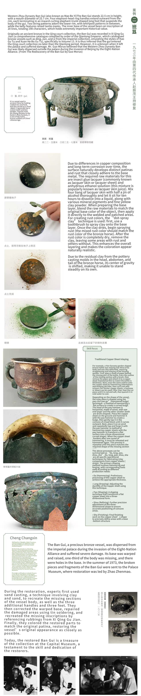
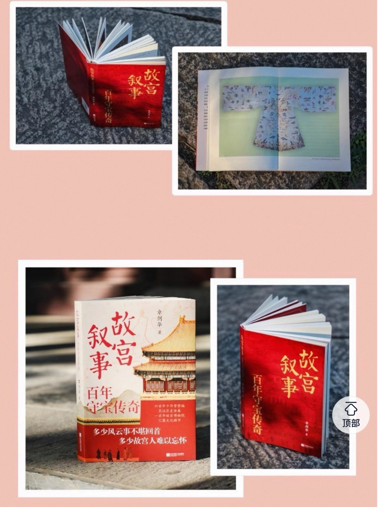
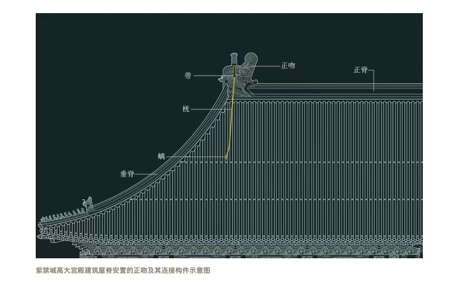
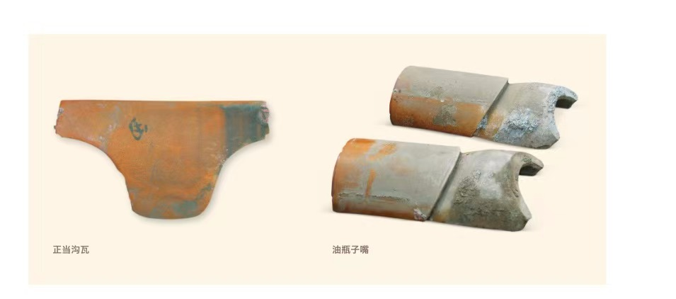
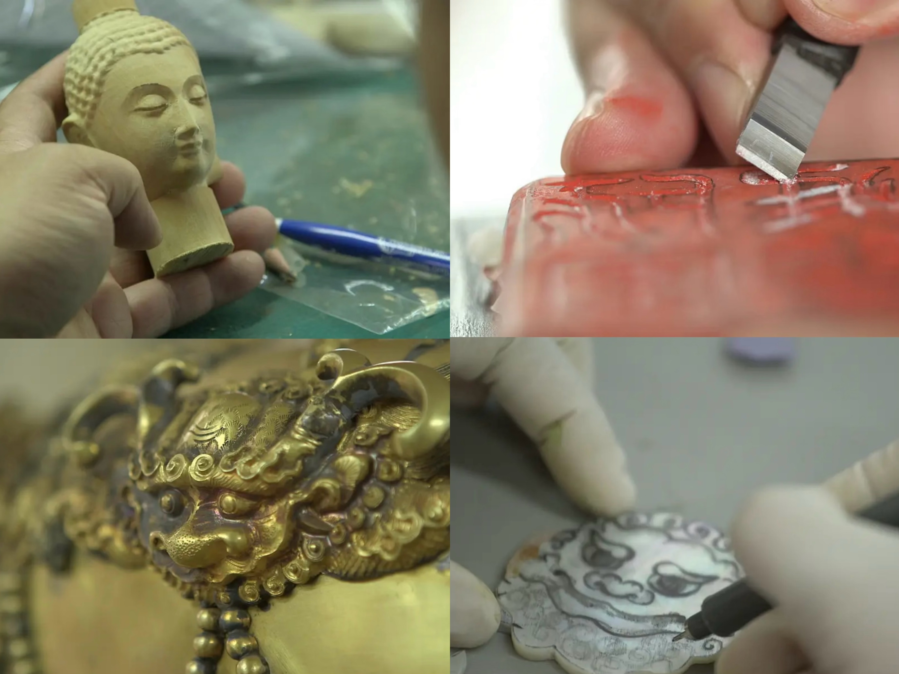

The bronze restoration techniques of the Palace Museum are embodied in the restored heavy bronze artifacts, which have regained their splendor after restoration. Zhao Zhenmao, the fourth-generation inheritor of the "Jingpai" traditional bronze restoration craft, not only restored a large number of precious bronze cultural relics after entering the Palace Museum, but also trained successive generations of bronze restorers there. The traditional bronze restoration techniques have developed for over 70 years, evolving and innovating with the times while being passed down. The characteristics of the Palace Museum's bronze restoration are contained in each restored heavy bronze artifact, and we can review the classic restoration cases of the fourth to sixth generations of restorers.



2025 is the 100th anniversary of the founding of the Palace Museum. We will grandly launch the Unspeakable Forbidden City, which is a panoramic interpretation of the culture and history of the Forbidden City. The author leads readers into the core of this world cultural heritage with detailed historical materials, exquisite architectural analysis and vivid historical stories. From the construction concept and architectural layout of the Forbidden City to the major historical events and precious cultural relics, this book not only shows the magnificent momentum of the Forbidden City as the pinnacle of Chinese feudal society, but also reveals its profound cultural connotation and unique artistic charm. This book reproduces the magnificent scene and historical details of the Forbidden City through exclusive first-hand information and precious pictures. It is a must-see for readers who love history and culture, art architecture and ancient politics.

The 12-episode documentary adopts a Chinese perspective. Each episode focuses on an artistic period or theme, such as the Mesopotamian civilization, Ancient Egypt, the Renaissance, and the Rococo period. It interprets the collections of the Louvre while comparing them with cultural relics of the same period in the Forbidden City, with Chinese and foreign scholars conducting cross-temporal dialogues.
Covering topics from the origin of writing and symbols of royal power to the artistic conception of paintings, it centers on the idea of “parallel comparison and mutual learning between civilizations”, showing the diversity and commonality of human civilization.


Palace Museum Narratives: A Century of Treasure Guardianship Traces the 600-year history of the Forbidden City and fully presents its transformation from an imperial palace to a world-class modern museum. It not only sorts out the architectural layout, court rituals and cultural heritage of the Palace Museum, but also movingly records the most touching history of cultural protection in modern China. Through turbulent years, generations of scholars and guardians risked their lives to escort millions of national treasures on a long and arduous journey south and west, preserving Chinese civilization with faith and dedication.
From imperial palace to public museum, from wartime protection to contemporary communication, this book is more than a story about the Forbidden City. It embodies the spirit of the Chinese nation: cherishing culture, safeguarding heritage, and carrying on civilization endlessly. It allows readers to feel the weight and strength of Chinese civilization through genuine historical details.


The glazed tile roof of the ancient building of the Forbidden City is not only a gorgeous decoration, but also an important structure to ensure the safety of the building. Among them, there are a variety of special glazed components hidden, especially the "three ridges" on the Ming Dynasty and some important buildings in the mid-Qing Dynasty - the oil bottle mouth, shoulder plate tiles and fishshell tiles are the most typical. These components in the mid-Qing Dynasty The post-function is gradually replaced by ordinary components.

The oil bottle mouth is a cylinder tile installed at the root of the ridge. There is an arc groove on the back, which can closely bite with the ditch tile under the ridge to prevent rainwater from seeping in. There are two forms: without bear head and with bear head. The latter is more common in the Qin'an Hall, which is inferred to be used in the Qing Dynasty.
The shoulder plate tile is installed at the ridge and the root of the ridge and the ridge at the wing corner. It is the bottom tile at the top of the roof. It enhances the waterproofness through the relative installation and buckle of fishshell tiles. It is divided into regular parts at the main ridge and cut corners at the wing corner. After the middle of the Qing Dynasty, it was mostly replaced by ordinary plate tiles.


Although these hidden components are difficult to see in appearance, they condense the creative wisdom of ancient craftsmen, reflect the implicitly restrained and responsible craftsmanship, and highlight the far-reaching influence of traditional culture on traditional architecture.
When exploring the laws of nature, the ancients combined the yin and yang changes of the four seasons with the characteristics of the human body to summarise the health rules of spring birth, summer growth, autumn harvest and winter storage, which is not only an important part of traditional Chinese medicine health care and healing, but also the core guiding ideology of Taoist health care.
The four-time health thought of traditional Chinese medicine was born from the Taoist concept of "yin and yang" and "five elements", and the construction of its theoretical system takes the Yellow Emperor's Inner Sutra as the core. The book absorbs the Taoist concept of "the correspondence between heaven and man", builds a yin and yang system of the human body, attributes the root cause of the disease to the yin and yang imbalance in the body, and combines the yin and yang changes of the four seasons to form a systematic theory of "hiding qi time", advocating that the internal organs of the human body correspond to the five elements of nature and conform to the four seasons of health.
The Taoist philosophy of "Taoism is natural" not only laid the theoretical foundation of the idea of traditional Chinese medicine health care, but also deeply influenced the Taoist doctrine of four-time health care.

Masters in the Forbidden City focuses on the daily work of cultural relic restorers at the Palace Museum. It captures the delicate restoration process of bronze, ceramics, calligraphy, paintings, clocks and wooden treasures. With a calm and sincere perspective, the documentary shows the lifelong dedication of craftsmen, who bring thousands of years of cultural relics back to life and pass on the profound heritage of Chinese civilization.
